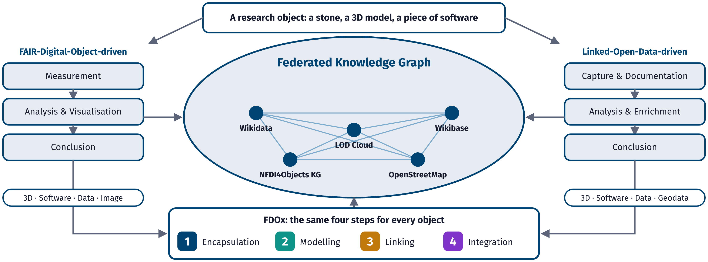
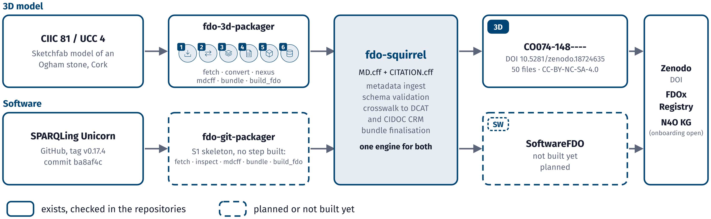
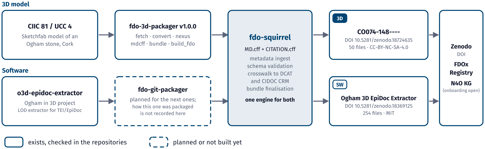
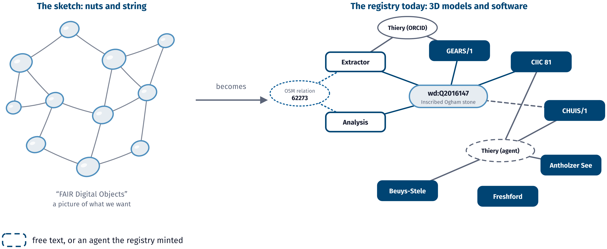

From the FKGE to FDOx
Graphics that lead from the federated knowledge graph ecosystem to FDOx, for 3D models and software.

SY.1From the federated KG ecosystem to FDOx: the FDO-driven and the LOD-driven way into the graph, with the four FDOx steps (the FDOx four-step pattern) as the bridge for 3D models and software.
FDOx-squirrel, fdox-visuals (Florian Thiery, Research Squirrel Engineers Network / LEIZA). Code: MIT licence. Simplified from the FKGE diagram of Thiery & Noback (CC BY 4.0).


Concept: planned, not implemented yet

SY.2Two roads, one bundle: CIIC 81 (3D) and the SPARQLing Unicorn plugin (software, planned) meet in the same fdo-squirrel engine. What differs: the type tag (3DDataFDO or SoftwareFDO) and the roles of the files (model and textures; for software the code, scripts and documentation). What does not: the MD.cff schema, fdo-squirrel, the DOI, the registry record and the way both are queried.
FDOx-squirrel, fdox-visuals (Florian Thiery, Research Squirrel Engineers Network / LEIZA). Code: MIT licence. CIIC 81: registry 253aee9. SPARQLing Unicorn: tag v0.17.4 (ba8af4c), read 2026-11-05. fdo-git-packager is a skeleton (S1); the software FDO is not built yet.



SY.3Two roads, one bundle: CIIC 81 (3D) and the finished Ogham 3D EpiDoc Extractor (software) end up as the same kind of FDO. What differs: the type tag (3DDataFDO or SoftwareFDO) and the roles of the files (model and textures; for the extractor software 222, script 30, documentation 2). What does not: the MD.cff schema, fdo-squirrel, the DOI, the registry record and the way both are queried.
FDOx-squirrel, fdox-visuals (Florian Thiery, Research Squirrel Engineers Network / LEIZA). Code: MIT licence. Registry 253aee9 (release 2026-09-03), registry-index.json. fdo-git-packager is a skeleton (S1); how the extractor was packaged is not recorded here.



SY.4From Squilly’s nut-and-string graph to a real one: eight FDOs, the concepts and people that connect them. Freshford shares nothing with the others. Dashed: free text, or an agent the registry minted.
FDOx-squirrel, fdox-visuals (Florian Thiery, Research Squirrel Engineers Network / LEIZA). Code: MIT licence. Left: drawn sketch, not data. Right: registry 253aee9 (release 2026-09-03), dist/fdo-registry.ttl, 7,793 triples; graph facts as in the Ogham graphs.